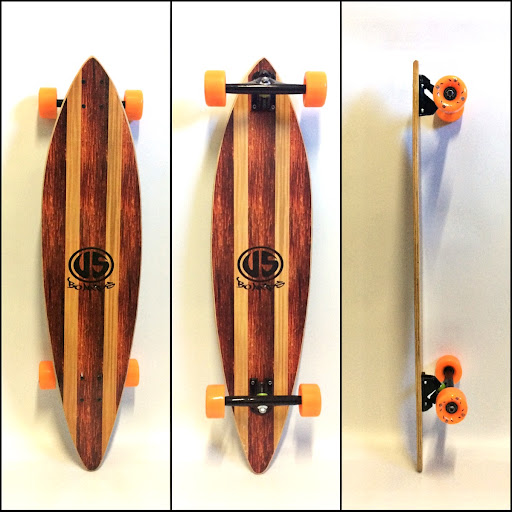
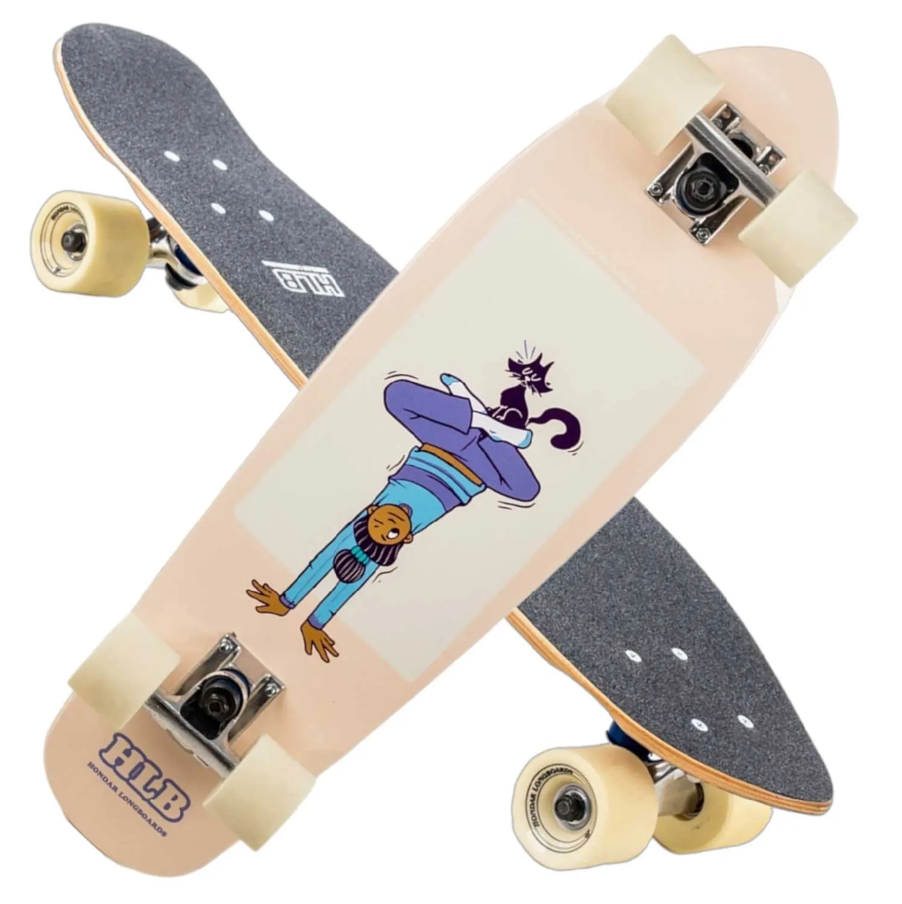

Entre as modalidades que costumam estar nos campeonatos pelo mundo afora estão street e park. O street é disputado em uma pista que simula a rua, com obstáculos como bancos, corrimões e escadas. O park acontece em uma pista que parece uma piscina, com alguns elementos do street e obstáculos que interagem entre si, permitindo que o skatista saia de uma manobra e já inicie outra.
O esporte ainda tem muitas outras modalidades, como vertical, downhill e slalom, e cada uma exige um skate diferente. De maneira bem simplificada, os shapes (como é chamada a prancha do skate) mais estreitos são melhores para manobras e os mais largos indicados para estabilidade e velocidade. As rodinhas também influenciam muito no acessório. Basicamente, quanto maior a roda, mais estabilidade o skate ganha e quanto mais dura, mais velocidade.
Conheça um pouco mais sobre os diferentes tipos de skate:
Street
O street é o skate mais tradicional. Com o shape mais fino e as rodas menores e mais duras, é o ideal para fazer manobras em corrimões, bancos ou escadas.
Longboard

O longboard é aquele skate mais comprido, com rodas grandes que ajudam a atingir maiores velocidades com bastante estabilidade. Ele é bastante usado em downhill, modalidade em que os skatistas descem ladeiras e fazem curvas apoiando as mãos no chão.
Cruiser

Os skates cruiser são os mais indicados para passeios no asfalto, principalmente em vias urbanas, com superfícies irregulares. Esse tipo de skate tem rodas maiores, que dão bastante estabilidade, mas dificultam manobras.